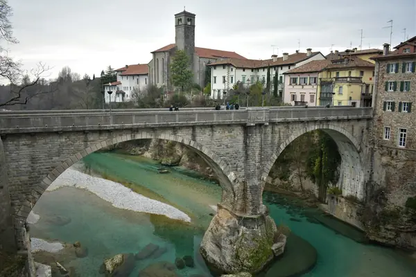

Home › Wine regions › Friuli-Venezia Giulia
Friuli-Venezia Giulia wine region

Photo: Tomasz Anusiewicz on Unsplash
Some of Italy's finest whites, plus orange wines.
Vines grow in all 20 regions. Wines are classed DOCG, DOC and IGT.
Climate and soil
Alpine and Adriatic influences. Collio and Colli Orientali have marl and sandstone soils.
Key areas and appellations
Collio, Colli Orientali del Friuli, Friuli Grave, Carso
Good to know
Known for refined whites and for skin-contact orange wines made from Ribolla Gialla.
The grapes of Friuli-Venezia Giulia
- Friulano (white): pear, almond, herbs. Best known in Friuli.
- Ribolla Gialla (white): citrus, apple, herbs. Best known in Friuli.
- Pinot Grigio (white): pear, citrus, almond. Best known in Veneto, Alsace, Oregon.
- Refosco (red): blackberry, plum, herbs. Best known in Friuli.
Notable producers in Friuli-Venezia Giulia
- Jermann
- Livio Felluga
- Gravner
- Vie di Romans
- Schiopetto
Official appellations
| Appellation | Status | Style | Grapes |
|---|---|---|---|
| Colli Orientali del Friuli Picolit (2006) Sweet white from the eastern hills of Friuli near Cividale, Nimis and Tarcento, on the layered marl and sandstone known as ponca. At least 85% Picolit, a grape whose flowers set poorly so bunches carry few berries; grapes are dried on or off the vine to make a delicate, honeyed passito. Good to know: the Cialla sub-zone near Prepotto is the most prized; Picolit was a famous luxury wine at European courts in the 18th century. | DOCG | Sweet | Picolit |
| Ramandolo (2001) Sweet white from the steep, cool hills above Nimis and Tarcento in the far north of the Colli Orientali, on ponca marl and sandstone with high rainfall. Made from 100% Verduzzo Friulano, its golden variant, with grapes late-picked or dried to give a sweet wine with a distinctive tannic grip. Good to know: it was Friuli's first DOCG (2001), promoted from a sub-zone of the Colli Orientali del Friuli DOC. | DOCG | Sweet | Verduzzo Friulano |
| Rosazzo (2011) White blends from the hills around Manzano, San Giovanni al Natisone and part of Corno di Rosazzo, in the southern Colli Orientali, on ponca marl and sandstone. At least 50% Friulano with 20–30% Sauvignon Blanc, 20–30% Pinot Bianco or Chardonnay and up to 10% Ribolla Gialla. Good to know: the name comes from the Abbey of Rosazzo, whose monks tended vines here for centuries; it became a DOCG in 2011. | DOCG | White | Friulano, Sauvignon Blanc, Pinot Blanc, Chardonnay, Ribolla Gialla |
| Carso (1985) Windswept limestone karst plateau above Trieste, on the Slovenian border, with thin red soils in sinkholes over bare rock, sea-tempered summers and the cold bora wind. The DOC (also labelled Carso-Kras) is built on white Vitovska and Malvasia Istriana and the sharp red Terrano (a Refosco), with Chardonnay and Sauvignon in a minor role. Good to know: many growers make skin-macerated whites and often bottle under the Venezia Giulia IGT, so the DOC itself is very small. | DOC | White, Red | Vitovska, Malvasia Istriana, Terrano, Sauvignon Blanc, Chardonnay |
| Collio (1968) Collio Goriziano: hills along the Slovenian border north of Gorizia, on layered marl and sandstone called ponca. Best known for whites, both varietal (Friulano, Ribolla Gialla, Sauvignon, Malvasia) and the Collio Bianco blend, with some Merlot and Cabernet reds and a sweet Picolit. White Riserva needs 20 months; good to know: the hills continue into Slovenia as Goriška Brda, and some producers here pioneered skin-contact whites. | DOC | White, Red, Sweet | Friulano, Ribolla Gialla, Sauvignon Blanc, Pinot Grigio, Chardonnay, Malvasia, Merlot, Cabernet Franc |
| Friuli (2016) Region-wide DOC for Friuli-Venezia Giulia, also labelled 'Friuli Venezia Giulia' or, in Slovenian, 'Furlanija'. It allows blends and 85% varietals from local and international grapes, plus Charmat and metodo classico sparkling (Ribolla Gialla included) and a sweet Verduzzo. Good to know: Riserva is 1 year for whites and 2 for reds, and the metodo classico needs at least 15 months on the lees. | DOC | White, Red, Rosé, Sparkling, Sweet | Friulano, Pinot Grigio, Ribolla Gialla, Sauvignon Blanc, Chardonnay, Refosco, Merlot, Cabernet Franc |
| Friuli Annia Coastal plains DOC near the Laguna di Marano. | DOC | White, Red | Friulano, Merlot |
| Friuli Aquileia Plains around the Roman town of Aquileia. | DOC | White, Red | Refosco, Friulano, Merlot |
| Friuli Colli Orientali (1970) Hillside DOC in the province of Udine on the Slovenian border, with terraced vineyards on ponca (layered marl and sandstone) and a climate cooled by the Julian Alps. Whites such as Friulano, Ribolla Gialla and Sauvignon sit alongside native reds Refosco, Schioppettino and Pignolo; Riserva needs 2 years (Pignolo 4). Good to know: sub-zones include Cialla, Prepotto (Schioppettino), Faedis (Refosco), Rosazzo and Savorgnano, and the sweet Picolit and Ramandolo are separate DOCGs. | DOC | White, Red, Sweet | Friulano, Ribolla Gialla, Sauvignon Blanc, Pinot Grigio, Refosco, Schioppettino, Pignolo, Merlot |
| Friuli Grave (1970) Friuli's largest DOC, spread over the flat, stony plain of Pordenone and Udine built up by the Tagliamento and other Alpine rivers (grave means gravel). Free-draining soils and big day–night swings give crisp whites — Pinot Grigio, Friulano, Sauvignon, Chardonnay — and fruity reds from Merlot, the Cabernets, Carmenère and Refosco. Good to know: Superiore requires higher minimum alcohol, Riserva at least 2 years' ageing, and there are also frizzante and spumante versions. | DOC | White, Red, Rosé, Sparkling | Pinot Grigio, Friulano, Sauvignon Blanc, Chardonnay, Merlot, Cabernet Franc, Refosco |
| Friuli Isonzo (1974) Plain on both sides of the Isonzo river in the province of Gorizia, between Collio and the Adriatic; the right bank has red, iron-rich gravels, the left pale limestone gravels. Long list of varietals led by Friulano, Pinot Grigio, Sauvignon, Malvasia and Merlot, with blends, spumante and Moscato Rosa. Good to know: a sweet Vendemmia Tardiva is made from late-picked white grapes, and Pignolo must age 2 years before release. Also labelled Isonzo del Friuli. | DOC | White, Red, Rosé, Sparkling, Sweet | Friulano, Pinot Grigio, Sauvignon Blanc, Chardonnay, Malvasia, Merlot, Cabernet Franc, Refosco |
| Friuli Latisana Plains DOC along the Tagliamento. | DOC | White, Red | Merlot, Friulano |
Friuli-Venezia Giulia wines to try
Jermann Vintage Tunina
Friuli-Venezia Giulia · Venezia Giulia · Sauvignon Blanc, Chardonnay, Ribolla Gialla, Malvasia
Rich field-blend white: honey, ripe pear, flowers and herbs, long and textured.
Food: Seafood risotto, white meats, mild cheese
Schiopetto Friulano
Friuli-Venezia Giulia · Collio · Friulano
Creamy texture, almond, pear and wild herbs with a bitter-almond finish.
Food: Prosciutto di San Daniele, asparagus, frittata
Specogna Pinot Grigio Ramato
Friuli-Venezia Giulia · Friuli Colli Orientali · Pinot Grigio
Skin-contact copper-coloured Pinot Grigio: pear, spice and texture.
Food: Charcuterie, risotto
Livio Felluga Pinot Grigio
Friuli-Venezia Giulia · Friuli Colli Orientali · Pinot Grigio
Structured Friuli Pinot Grigio: pear, almond and fresh finish.
Food: Fish, antipasti
Ronchi di Cialla Schioppettino di Cialla
Friuli-Venezia Giulia · Friuli Colli Orientali DOC (Cialla) · Schioppettino
The estate that saved Schioppettino: crunchy raspberry, crushed black pepper and a fine, cool-climate frame.
Food: Roast pigeon, mushroom risotto
Food to try with Friuli-Venezia Giulia wines
- Pasta & tomato: Tomato's high acidity needs an equally fresh wine; Sangiovese's bright cherry fruit and acidity is a natural match for tomato sauce.
- Spanakopita: Salty feta, spinach and herbs in crisp filo match the zesty acidity and saline minerality of Greek Assyrtiko.
- Caprese salad: Ripe tomatoes, mozzarella and basil need a light, fresh Italian white whose acidity mirrors the tomato and refreshes the cheese.
- Linguine al pesto: Basil, garlic and pine nuts love herbal whites; Ligurian Vermentino is the local match for pesto's home region.
- Tomato bruschetta: Fresh tomato, garlic and olive oil on toast need a crisp, light Italian white or Prosecco to match their acidity and simplicity.
- Spinach and ricotta cannelloni: Textured Italian whites suit the mild ricotta and spinach, while a light Chianti handles the tomato sauce.
More wine regions in Italy
See Friuli-Venezia Giulia on the wine map
The Wine Reference newsletter
New wines, stories and career guides, one email a week at most.
Over 18s only. Unsubscribe any time with one click. Your email is stored securely by Kit and never shared.
Support The Wine Reference
This guide is free, with no paywall. If it helped you choose a bottle, you can buy me a glass and keep it growing.
🍷 Buy me a glass